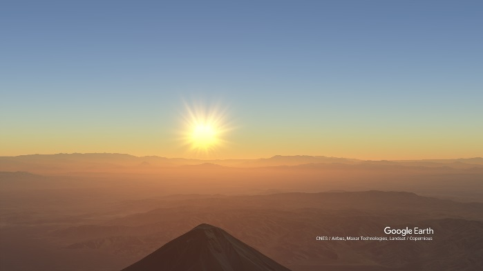

Shibboleth Bible Software announces the Greatest discovery in History
24 Mar, 2022
Shibboleth Bible Software announces to the World that the Tabernacle of Moses is actually a 1/361 scale model of the Ararat Plain, including Mount Ararat and Little Ararat.
The Tabernacle of Moses is actually a 3D Map, with exact proportions and orientation, using this map we were able to find the exact location of Noah's Ark.
We also announce that Mount Ararat and Little Ararat are actually an Astronomical calendar, designed precisely, that ONLY on december 24 every year the sun rises over Little Ararat watching from the summit of Mount Ararat.

This without doubt is the greatest discovery in Human History and it's implications are uncalculable.
Click here to See on Google Earth
Coordinates: 39.7270965, 44.2370825
More information soon... spread the news to the Christian Churches.